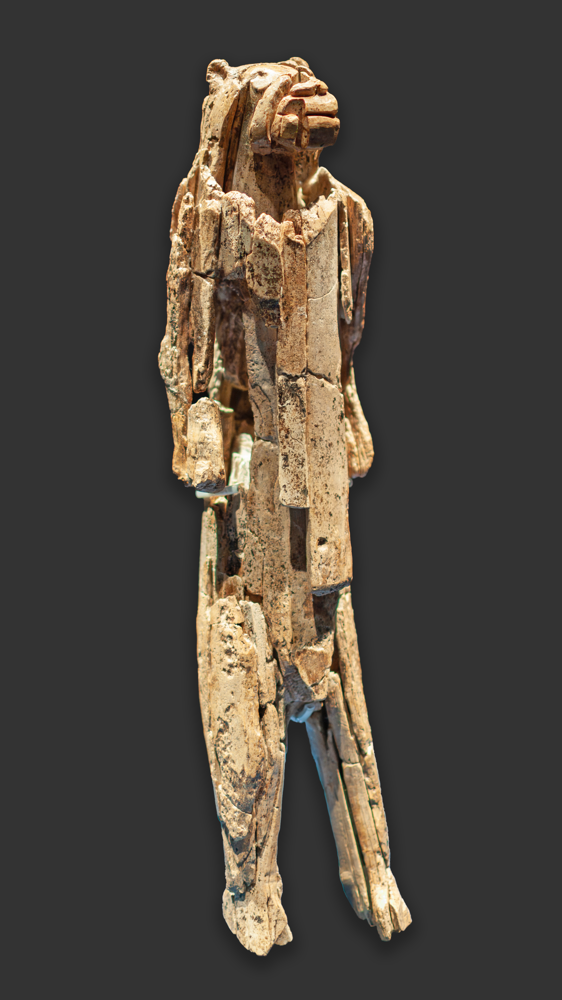
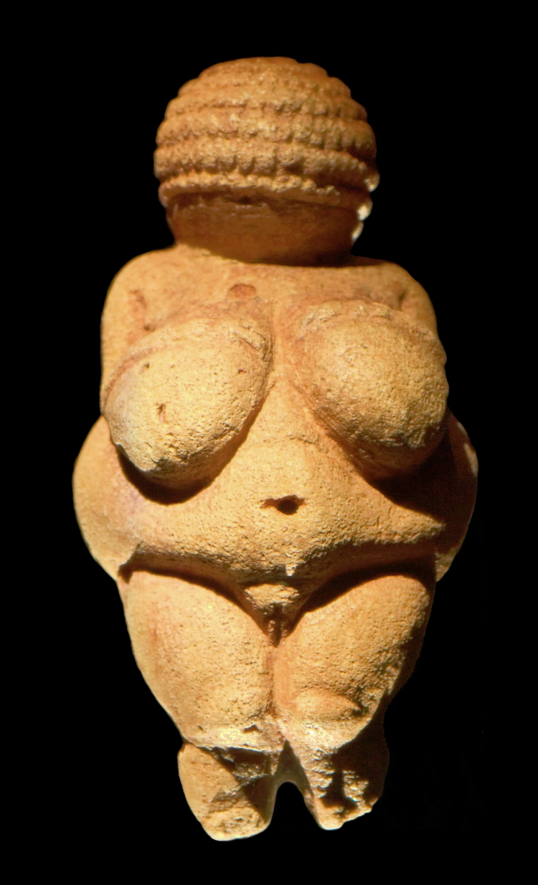

Durante decenas de miles de años lo sagrado no tuvo forma. Hasta que una mano talló en marfil una figura imposible —mitad humana, mitad león— y algo cambió para siempre.
Hemos visto enterramientos, ocre, un santuario de piedra. Pero en todo eso falta algo: una imagen. ¿Cuándo empezó el ser humano a dar forma a lo que imaginaba? ¿Cuándo lo invisible —la fuerza, el espíritu, el más allá— tuvo por primera vez un cuerpo que se podía sostener en la mano? Esta entrega trata del nacimiento de la figura: el momento en que lo divino, o lo que fuera, tuvo rostro.
En una cueva de los Alpes de Suabia, en Alemania, apareció en 1939 una figura tallada en marfil de mamut. Reconstruida a partir de más de doscientos fragmentos, mide unos 31 centímetros y representa algo que no existe en la naturaleza: un cuerpo humano de pie con cabeza de león. Se la conoce como el Hombre-león (Löwenmensch), y tiene unos 40.000 años.

Detente a pensar lo que eso significa. Tallar esta figura con herramientas de piedra llevó cientos de horas. Y no representa un animal que se pueda cazar, ni una persona real. Representa una idea: un ser que combina lo humano y lo animal, algo que solo existe en la mente. Es la prueba más antigua que tenemos de que el ser humano podía imaginar lo que no está ahí —y considerarlo tan importante como para dedicarle semanas de trabajo—.
Hace 40.000 años, alguien pasó semanas tallando en marfil una criatura mitad hombre, mitad león. Nadie había visto jamás algo así: salió entera de la imaginación. Es la escultura figurativa más antigua del mundo, y ya hablaba de seres que no existen.
Los seres híbridos —mitad humanos, mitad animales— recorren la historia de las religiones: los dioses con cabeza de animal de Egipto, los centauros griegos, los ángeles alados, los demonios. El Hombre-león sugiere que esa capacidad de imaginar lo sobrenatural —lo que rompe las reglas del mundo real— es antíquisima. Y aparece justo cuando Homo sapiens despliega toda su explosión creativa en Europa.
Los arqueólogos son prudentes: no sabemos si el Hombre-león era un dios, un espíritu, un ancestro, un ser mítico o un chamán disfrazado. Pero sí sabemos que quien lo hizo podía concebir lo que no existe y darle forma. Y sin esa capacidad —imaginar agentes invisibles, seres que trascienden lo natural— ninguna religión sería posible. Aquí está la semilla.
Junto a los seres híbridos aparece otro tipo de figura, mucho más numeroso: pequeñas estatuillas de mujeres, halladas por toda Europa y Asia, talladas entre hace 35.000 y 20.000 años. Las más célebres, como la Venus de Willendorf (Austria, unos 25.000–30.000 años), muestran cuerpos femeninos de formas amplias, con pechos, caderas y vientre acentuados, y a menudo sin rostro.

Durante mucho tiempo se dio por sentado que eran diosas de la fertilidad, imágenes de una gran "Diosa Madre" universal. Es una idea seductora. Y es, también, un buen ejemplo de cómo proyectamos nuestras ideas sobre el pasado mudo.
Empecemos por el nombre. Llamarlas "venus" es un anacronismo: la diosa romana Venus es miles de años posterior a estas figuras. El término lo pusieron arqueólogos del siglo XIX, medio en broma, y se quedó. Pero arrastra una interpretación —belleza, sexualidad, divinidad femenina— que nadie ha demostrado que corresponda a lo que significaban hace treinta mil años.
¿Qué eran en realidad? No hay una respuesta única, y esa es la clave: las figuras varían muchísimo entre sí. Se han propuesto muchas lecturas, todas plausibles, ninguna probada.
Representan una divinidad femenina ligada a la fecundidad y la abundancia, quizá una "Diosa Madre" adorada en toda Europa. La religión más antigua habría sido femenina.
Podrían ser amuletos, retratos, autorretratos vistos desde arriba, símbolos de estatus o de salud. La enorme variedad entre figuras desaconseja una única explicación universal.
La idea de una única "Diosa Madre" prehistórica, muy popular en el siglo XX, hoy se mira con cautela: agrupa bajo una sola etiqueta objetos de miles de años y miles de kilómetros de distancia, con formas muy distintas. Que muchas figuras femeninas subrayen la fecundidad es un hecho; que todas fueran "la Diosa" es una hipótesis que la evidencia no sostiene.
Lectura: es seguro que estas figuras existían y tenían valor simbólico. Su significado concreto está muy debatido. La tesis de una "Diosa Madre" universal es hoy minoritaria: seductora, pero sin apoyo firme en la evidencia.
Lo que sí podemos afirmar es que, hace decenas de miles de años, el ser humano no solo enterraba a sus muertos: tallaba figuras —de mujeres, de seres imposibles— cargadas de un sentido que se nos escapa. Lo invisible empezaba a tener cuerpo. Y una vez que lo sagrado tiene rostro, ya solo falta un paso para que hable, exija y prometa. Ese paso lo daremos en las cuevas.
La datación del Hombre-león (35.000–41.000 años, cultura auriñaciense) procede del radiocarbono de la capa de hallazgo, según el Museo de Ulm y los trabajos de Kurt Wehrberger y Claus-Joachim Kind. La Venus de Willendorf se data por estratigrafía (análisis de 1990) en torno a 25.000–30.000 años.
El escepticismo hacia la tesis de la "Diosa Madre" universal es hoy mayoritario entre especialistas (véanse los trabajos de la arqueóloga Lynn Meskell y otros). La lectura de las figuras como autorretratos fue propuesta por McCoid y McDermott; la variedad tipológica de las figuras es el principal argumento contra cualquier interpretación única.
Se mantiene la distinción entre el hecho (existencia y valor simbólico de las figuras) y su significado (función religiosa concreta), que permanece abierto.